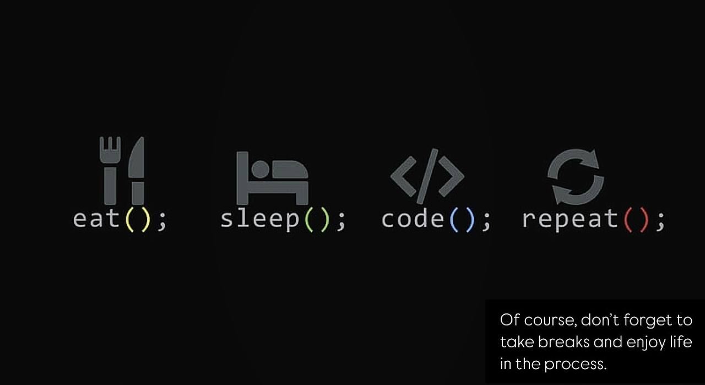

Embrace every bug as a chance to learn and grow.
Write, test, debug, and refine—this is the essence of coding.
Learn more about coding at W3Schools “To master a programming language, you must immerse yourself in coding.” – Dennis Ritchie
Simplicity is the key to efficiency. – Austin Freeman
“Everyone should learn how to program because it teaches you how to think critically.”
“Programming is thinking, not typing.”
Code should be written
for people to understand,
and only incidentally for computers to execute.
– Hal Abelson
Anyone can write code that a computer understands.
Great programmers write code that people understand.
– Martin Fowler
Code is art, and the developer is an artist.
Dive into programming and unlock endless possibilities!
Ideas alone are not enough; actions make them a reality. Scott Belsky Good software makes complex tasks appear simple. Grady Booch Programs should be readable by humans and executable by computers. – Hal AbelsonProgramming is not just a skill; it’s a way of thinking.
The code often rarely works on the first attempt.
Coding is life,
and life is coding.
Here is a quote from WWF's website:
For 60 years, WWF has worked to ensure people and nature thrive together. As the leading conservation organization, WWF operates in nearly 100 countries. We work with global partners to develop and implement innovative solutions that safeguard communities, wildlife, and their habitats.
WWF's mission is to: Foster a future where people and nature coexist in harmony.
The WHO was founded in 1948.
Created by developers.Quotes for Developers dedicated to all coding enthusiasts.
Eat Sleep Code Repeat